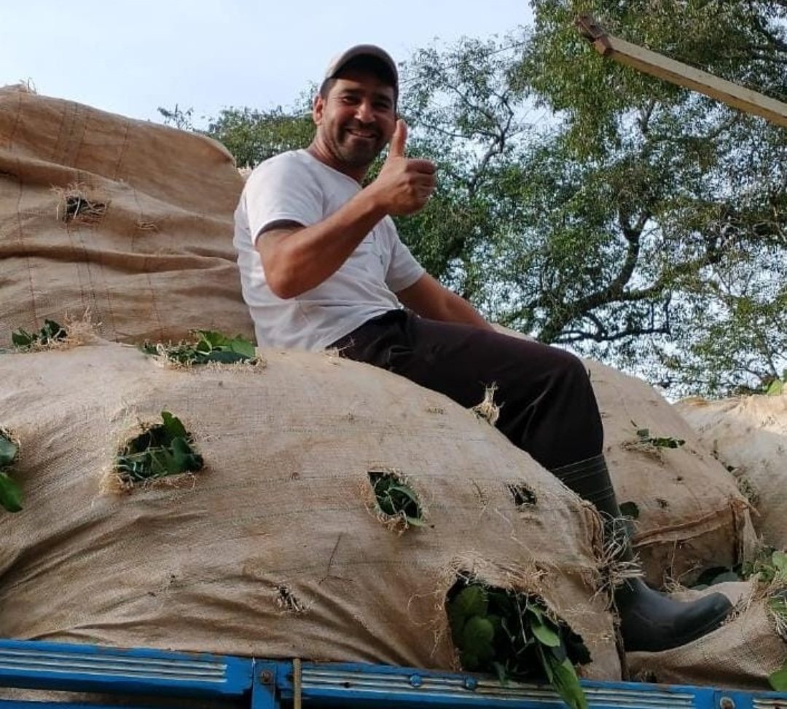

A erva-mate além influenciar no passado, continua influenciando no presente.
E isso não está muito longe de nós, em Rebouças-PR temos várias famílias que dependem do cultivo dessa planta.
Veja abaixo um relato de um trabalhador____
"Olha a erva-mate é muito importante pra mim, é o meu ganha pão, toda minha família depende da colheita dessa planta, hoje eu trabalho com várias pessoas, que não são apenas colegas de serviço, e sim uma família."

A erva mate está presente em nosso cotidiano em várias formas, como em receitas, bebidas, infusões e o nosso famoso chimarrão, além de dar nome a times de futebol e reunir amigos.
Vamos falar um pouco mais sobre o chimarrão e o tereré:
Benefícios do Chimarrão: Naturalmente diurético, ele ajuda no bom funcionamento dos rins, promovendo a eliminação de líquidos, o que o torna perfeito para combater retenções e inchaços.
A história do chimarrão: o chimarrão é uma herança dos índios guaranis que habitavam o território do que são hoje a República do Paraguai e o estado do Paraná.
Os benefícios do tereré: O consumo do tereré pode prevenir o mal de Parkinson, facilita a digestão, melhora a memória e desenvolve faculdade mentais, regulariza a respiração, aumenta a força muscular, tonifica o sistema nervoso e melhora o humor.
A história do tereré: De origem paraguaia, o tereré chegou ao Brasil pela fronteira, pelos paraguaios e indígenas guaranis e kaiowás.
Que tal aprofundar-se um pouco mais? Clique aqui.